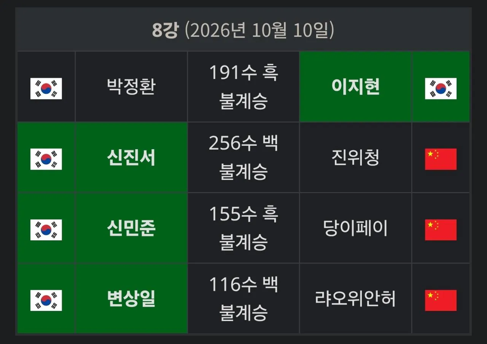
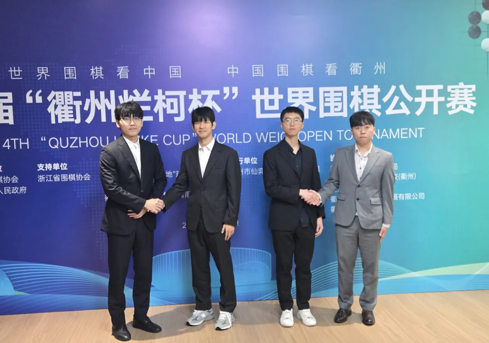

현재 진행중인 메이저대회인 란커배에서
4강 모든 자리에 한국 기사가 진출했습니다.
최근 몇 년간은 대회 8강 쯤에서부터
신진서 혼자 남아 버티고 그랬는데..
세계대회의 4강에 한국기사가
네 명 진출하다니
정말 기대 이상의 성과네요
중국의 최상위 기사인
딩하오는 16강에서 변상일에 패했고
왕싱하오는 32강에서 랴오위안허에게 패했네요
오늘 랭킹 1위인 신진서가 초반에 크게 실수하며
패배 직전까지 몰렸었지만
진위청의 안일한 수에 잘 대응하여
4강에 진출했습니다
란커배 4강전은 10월 12일
결승전은 10월 13일 ~ 15일에 진행됩니다.

중국 취저우에서 진행중인 란커배 4강에 올라간 한국 기사들
신진서 vs 이지현, 변상일 vs 신민준
세계 대회 4강을 모두 한국기사가 차지한 것은
2014년 이후 12년만
22년 삼성화재배 때 있었을거임